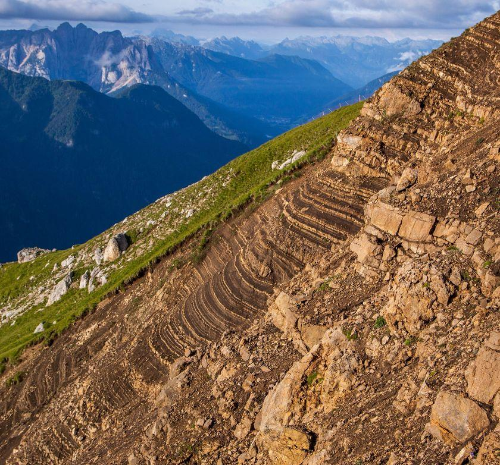
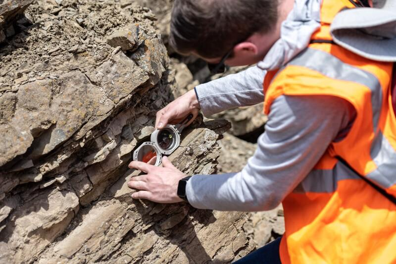
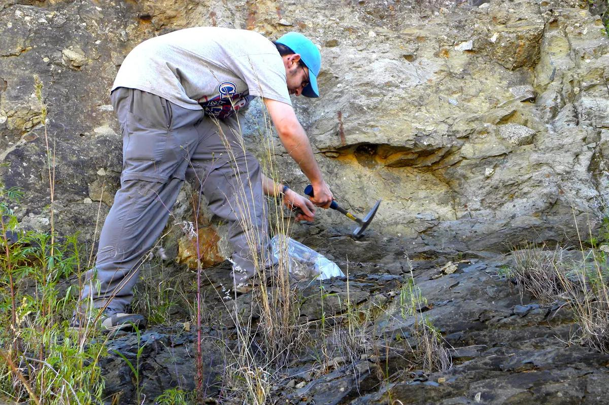
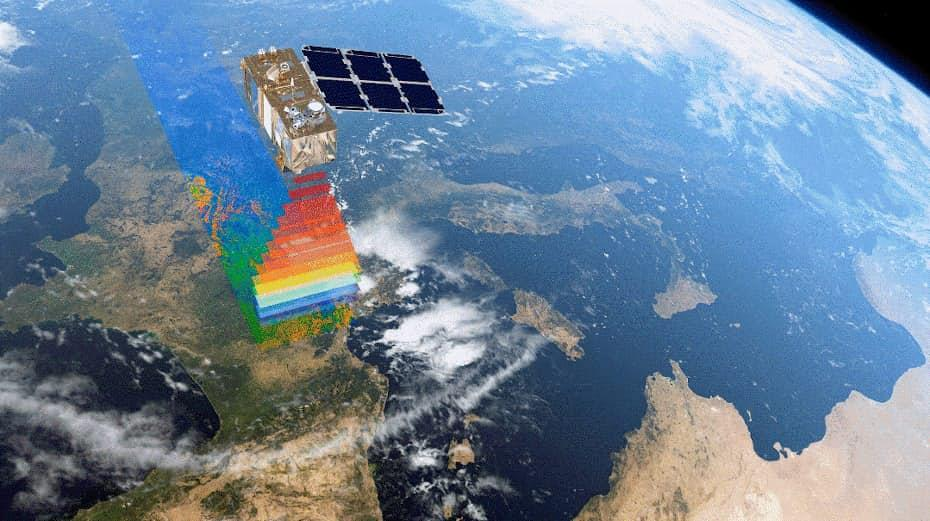
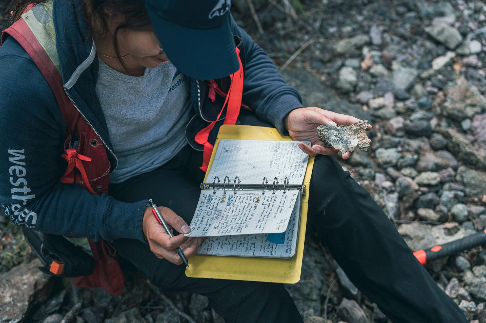
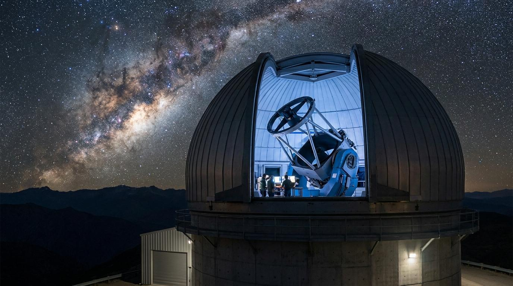
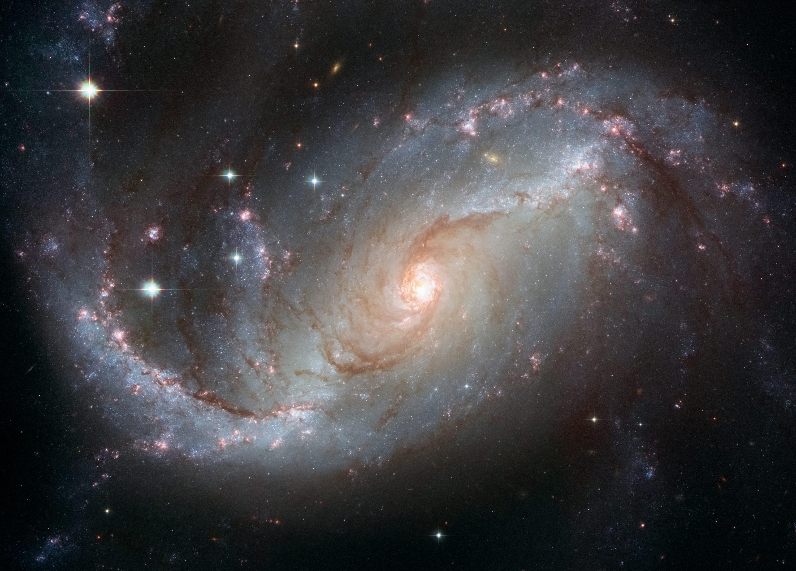
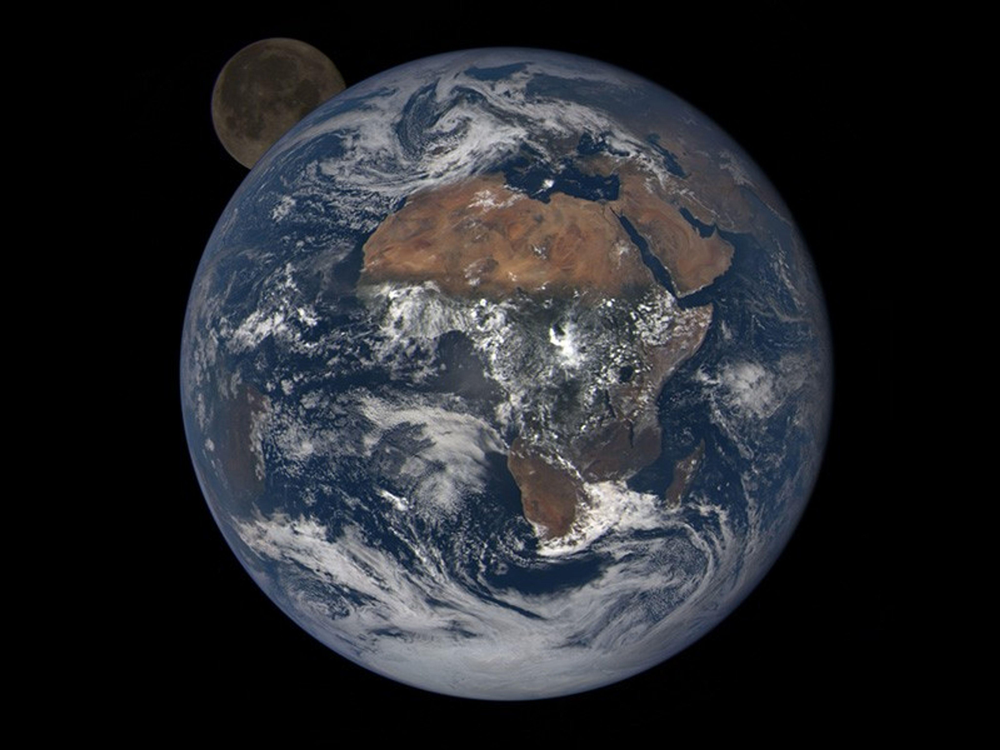

استكشف جميع المقررات الدراسية المتاحة في كــلــيــة الــتـــعديــــن وتعرّف على محتواها الأكاديمي.
تنويه:
المقررات الواردة في هذه الصفحة مستندة إلى المعلومات الرسمية الخاصة بكلية علوم الأرض ، وهي مقررات السنتين المشتركة الاولى في الكلية، وذلك لعدم اكتمال نشر المعلومات الرسمية المتعلقة بكلية التعدين حتى الآن، وسيتم تحديث هذه الصفحة فور صدور أي مستجدات رسمية.
السنة الأولى

جيولوجيا طبيعية (1)
EMR 101
4 ساعات
إجباري
المستوى الأول
نظري/عملي
يتناول المقرر المفاهيم الأساسية في الجيولوجيا الطبيعية، بما في ذلك أصل الأرض وتركيبها والمعادن والصخور والعمليات الجيولوجية المختلفة مثل البراكين والزلازل والصفائح التكتونية، مع التركيز على تنمية الفهم النظري والمهارات العملية في علوم الأرض.
أصل الأرض والنظام الشمسي.
المعادن والبلورات والصخور النارية والمتحولة.
البراكين والصفائح التكتونية والزلازل والبنية الداخلية للأرض.
التعرف على المعادن والصخور وتصنيفها.
تفسير الظواهر والعمليات الجيولوجية المختلفة.
تطبيق المهارات المعملية الأساسية في دراسة وتحليل العينات الجيولوجية.
يركز المقرر على دراسة العمليات الجيولوجية السطحية وشبه السطحية التي تشكل تضاريس سطح الأرض، ويجمع بين المحاضرات والدروس العملية لتنمية الفهم النظري والمهارات التطبيقية في الجيولوجيا.
التجوية والتربة والصخور الرسوبية وعمليات النقل والترسيب.
التراكيب الجيولوجية والانهيارات الأرضية والعمليات الجليدية والساحلية والمحيطية.
يتناول المقرر المبادئ الأساسية للبصريات المعدنية وسلوك الضوء عند مروره خلال المعادن، مع التركيز على دراسة الخواص البصرية للمعادن باستخدام المجهر البتروجرافي وتطبيقاتها في التعرف على المعادن وتشخيصها.
نظرية الضوء، الانعكاس والانكسار، والاستقطاب والانكسار المزدوج.
المجهر المستقطب ومكوناته والخواص البصرية للمعادن تحت الضوء المستقطب والمستقطب المتعامد.
الأشكال التداخلية، وتحديد الإشارة البصرية للمعادن والتعرف على المعادن المكونة للصخور.
استخدام المجهر المستقطب بكفاءة لدراسة الشرائح الرقيقة.
تحديد وتشخيص المعادن اعتمادًا على خواصها البصرية المختلفة.
تفسير الأشكال التداخلية وتحديد الإشارة البصرية والتمييز بين المعادن المتشابهة بصريًا.
يتناول المقرر المبادئ الأساسية في علم الرسوبيات والطباقية وعلم الأحافير، مع التركيز على العمليات الرسوبية، والبيئات الترسيبية، والتراكيب الرسوبية، ومبادئ الطباقية وتصنيف الوحدات الطباقية، بالإضافة إلى دراسة الأحافير وأهميتها في تفسير البيئات القديمة والتاريخ الجيولوجي للأرض.
العمليات الرسوبية والبيئات الترسيبية والتراكيب الرسوبية وعمليات ما بعد الترسيب.
مبادئ الطباقية، وصف المقاطع الطباقية، وتصنيف الوحدات الطباقية.
علم الأحافير، تصنيف الأحافير، الأحافير المرشدة، والمجموعات الأحفورية الرئيسة.
تفسير البيئات الرسوبية والتعرف على التراكيب الرسوبية المختلفة.
وصف وتحليل المقاطع الطباقية وتصنيف الوحدات الطباقية.
التعرف على الأحافير وتصنيفها واستخدامها في تفسير البيئات القديمة والتاريخ الجيولوجي.
يتناول المقرر دراسة الصخور النارية والمتحولة من حيث نشأتها وتركيبها وتصنيفها وأنسجتها، كما يركز على عمليات تكوّن الصهارة وتطورها، وعمليات التحول الصخري والعوامل المؤثرة فيها، بالإضافة إلى تطبيقات الديناميكا الحرارية والعلاقات بين الصخور والبيئات التكتونية والترسيبات المعدنية المرتبطة بها.
يهدف المقرر إلى دراسة مبادئ الجيولوجيا البنائية، وتشوه الصخور والقوى المؤثرة عليها، والتراكيب الجيولوجية الناتجة عنها، مع التعرف على العلاقات الطبقية وأسـطح عدم التوافق وأهميتها في تفسير التاريخ الجيولوجي وتطور القشرة الأرضية.
يعرّف هذا المقرر الطلاب بالمبادئ الأساسية لطرق الاستكشاف الجيوفيزيائي المختلفة، بما في ذلك طرق الجاذبية والمغناطيسية والكهربائية والزلزالية. كما يتناول الخصائص الفيزيائية للصخور، وطرق جمع البيانات الجيوفيزيائية وتفسيرها، وتطبيقاتها في دراسة التراكيب الجيولوجية واستكشاف الموارد الطبيعية.
مبادئ طريقة الجاذبية وعلاقتها بالكثافة والتباين الكثافي بين الوحدات الجيولوجية.
المبادئ الأساسية للمغناطيسية الأرضية والقابلية المغناطيسية والعناصر الجيومغناطيسية.
المقاومة النوعية والتوصيلية الكهربائية والعوامل المؤثرة عليهما في الصخور والتربة.
أساسيات الاستكشاف الزلزالي، مصادر الموجات الزلزالية، وأجهزة التسجيل والاستقبال.
خصائص الموجات الزلزالية ومصطلحاتها الأساسية مثل الطول الموجي والتردد والسعة والزمن الدوري.
تطبيقات الطرق الجيوفيزيائية في الدراسات الهندسية والجيولوجية واستكشاف الموارد الطبيعية.
فهم الخصائص الفيزيائية للصخور وعلاقتها بالقياسات الجيوفيزيائية المختلفة.
استخدام وتحديد الأجهزة الأساسية المستخدمة في المسوحات الجيوفيزيائية.
تحليل وتفسير الشذوذات الجيوفيزيائية وربطها بالتراكيب الجيولوجية تحت السطحية.
التمييز بين مجالات استخدام الطرق الجاذبية والمغناطيسية والكهربائية والزلزالية.
اكتساب مهارات أولية في جمع البيانات الجيوفيزيائية ومعالجتها وتفسير نتائجها.
يتناول المقرر المبادئ الأساسية لعلم الصخور الرسوبية، بما في ذلك عمليات التجوية والنقل والترسيب، وتصنيف الصخور الرسوبية الفتاتية والكربوناتية، ودراسة مكوناتها ونسيجها، بالإضافة إلى عمليات ما بعد الترسيب وتأثيرها في خصائص الصخور الرسوبية.
عمليات الترسيب والبيئات الرسوبية.
تصنيف الصخور الرسوبية الفتاتية والكربوناتية.
نسيج الصخور الرسوبية وحجم الحبيبات ومكوناتها.
الحجر الرملي والصخور الطينية والحجر الجيري.
تغيرات ما بعد الترسيب (Diagenesis) في الصخور الرسوبية.
تصنيف الصخور الرسوبية اعتمادًا على حجم الحبيبات والتركيب المعدني.
التعرف على مكونات الصخور الرسوبية ووصف نسيجها ودرجة نضجها.
تفسير عمليات ما بعد الترسيب وتأثيرها في المسامية والنفاذية وخصائص الصخور.
يركز المقرر على التدريب العملي في إعداد الخرائط الجيولوجية من خلال أعمال الرفع الحقلي (Geological Mapping)، وتحديد الوحدات الصخرية والتراكيب الجيولوجية، وتمثيلها على الخرائط وإعداد المقاطع الجيولوجية، مع استخدام نظم المعلومات الجغرافية (ArcGIS) لإنتاج الخرائط الرقمية.
مبادئ الرفع الجيولوجي وإعداد الخرائط الحقلية.
تحديد الوحدات الصخرية وحدودها وتمثيلها بالألوان والرموز.
رسم المقاطع الجيولوجية (Geological Cross Sections).
إعداد الخرائط الجيولوجية الرقمية باستخدام برنامج ArcGIS.
تنفيذ أعمال الرفع الجيولوجي الميداني.
رسم الخرائط الجيولوجية والمقاطع الجيولوجية بدقة.
تفسير العلاقات بين الوحدات الصخرية والتراكيب الجيولوجية.
استخدام برنامج ArcGIS لإنتاج وتحليل الخرائط الجيولوجية.
علم الرسوبيات والأحافير
جيولوجيا بنائية
صخور نارية و متحولة

الجيولوجيا الحقلية
EMR 202
3 ساعات
إجباري
المستوى الرابع
تدريب
يهدف المقرر إلى تنمية المهارات الحقلية الأساسية في علوم الأرض من خلال التدريب الميداني على التعرف على التراكيب والظواهر الجيولوجية، واستخدام الأدوات الحقلية لجمع البيانات والقياسات والعينات الصخرية، مع تطبيق مبادئ العمل الحقلي وإعداد الملاحظات والتقارير العلمية.
التعرف على التراكيب الجيولوجية مثل الصدوع والطيات والفواصل.
استخدام البوصلة الجيولوجية وأخذ قياسات الميل والاتجاه (Strike & Dip).
جمع العينات الصخرية ووصفها وتوثيق مواقعها.
تسجيل الملاحظات الحقلية والتعرف على الوحدات الصخرية والبيئات الجيولوجية.
استخدام الأدوات الجيولوجية الحقلية بكفاءة.
التعرف على التراكيب الجيولوجية وقراءتها ميدانيًا.
جمع وتوثيق العينات والبيانات الحقلية بطريقة علمية.
إعداد الملاحظات والتقارير الحقلية وتحليل النتائج.
علم الرسوبيات والأحافير
جيولوجيا بنائية
صخور نارية و متحولة


نظم المعلومات الجغرافية والاستشعار عن بعد
ESR 201
3 ساعات
إجباري
المستوى الرابع
نظري/عملي
يتناول المقرر المفاهيم والمبادئ الأساسية لنظم المعلومات الجغرافية والاستشعار عن بعد، مع التركيز على جمع البيانات المكانية وتحليلها وتمثيلها باستخدام التقنيات الجيومكانية الحديثة وتطبيقاتها في علوم الأرض.
مفاهيم نظم المعلومات الجغرافية ومكوناتها وأنواع البيانات المكانية وغير المكانية.
أنظمة الإحداثيات والإسقاطات الخرائطية ومبادئ تمثيل البيانات المكانية.
مبادئ الاستشعار عن بعد والأقمار الصناعية والمستشعرات وأنواع دقة الصور الفضائية.
استخدام نظم المعلومات الجغرافية في إدارة وتحليل وتمثيل البيانات المكانية.
تفسير الصور الفضائية والتمييز بين أنواع البيانات والمستشعرات المختلفة.
تطبيق مفاهيم الإحداثيات والإسقاطات والاستشعار عن بعد في الدراسات الجيولوجية.
تناول المقرر أسس إعداد التقارير الجيولوجية وفق الأسلوب العلمي، من خلال تنظيم وتحليل البيانات الحقلية والمخبرية، وعرض النتائج باستخدام الخرائط والأشكال والجداول، وكتابة التقارير الفنية والبحثية وفق المعايير الأكاديمية والمهنية.
مبادئ كتابة التقارير الجيولوجية وأجزائها الأساسية.
تنظيم وتحليل البيانات الحقلية والمخبرية.
إعداد الخرائط والأشكال والجداول وإدراجها في التقارير.
عرض النتائج ومناقشتها وكتابة الاستنتاجات والتوصيات.
إعداد تقارير جيولوجية احترافية وفق المعايير العلمية.
تحليل وتفسير البيانات الجيولوجية وعرضها بوضوح.
توثيق المراجع والمصادر العلمية بطريقة صحيحة.
تطوير مهارات الكتابة الفنية والعرض العلمي للنتائج.
صخور نارية و متحولة

المواد الحرة

فلك عام
ASTR 201
4 ساعات
حرة
نظري/عملي
يتناول المقرر المبادئ الأساسية في علم الفلك، ويعرّف الطالب بنشأة الكون، والنظام الشمسي، والأجرام السماوية، وحركات الأرض والقمر، إضافةً إلى تطور النجوم والمجرات. كما يركز على فهم الظواهر الفلكية وأهميتها في تفسير الكون باستخدام الأسس العلمية الحديثة.
نشأة الكون ونظرية الانفجار العظيم.
النظام الشمسي والكواكب والأقمار والكويكبات والمذنبات.
حركات الأرض والقمر وتعاقب الليل والنهار والفصول.
النجوم وتصنيفها ودورة حياتها.
المجرات وبنية الكون والأجرام السماوية المختلفة.
أساسيات الرصد الفلكي والتلسكوبات وتقنيات دراسة الفضاء.
فهم المفاهيم الأساسية المتعلقة بالكون والأجرام السماوية.
تفسير الظواهر الفلكية مثل الكسوف والخسوف وتعاقب الفصول.
التمييز بين مكونات النظام الشمسي والنجوم والمجرات.
اكتساب مهارات أولية في قراءة الخرائط السماوية والتعرف على الأجرام الفلكية.
ربط المبادئ الفلكية بالتطبيقات العلمية والتقنيات الحديثة في استكشاف الفضاء.
فلك عالم


مقدمة في العلوم الطبيعية
CHEM 205
3 ساعات
حرة
نظري
يتناول مقرر علوم طبيعية المبادئ الأساسية في العلوم الطبيعية، ويعرّف الطالب بمفاهيم في علم الفلك والكون والنظام الشمسي والأجرام السماوية، إلى جانب تنمية الفهم العلمي للظواهر الطبيعية وربطها بالتطبيقات الحديثة. كما يهدف إلى بناء أساس علمي يساعد الطالب على استيعاب المقررات العلمية في التخصصات المختلفة.
نشأة الكون ونظرية الانفجار العظيم.
النظام الشمسي والكواكب والأقمار والكويكبات والمذنبات.
حركات الأرض والقمر وتعاقب الليل والنهار والفصول.
النجوم وتصنيفها ودورة حياتها.
المجرات وبنية الكون والأجرام السماوية المختلفة.
أساسيات الرصد الفلكي والتلسكوبات وتقنيات دراسة الفضاء.
فهم المفاهيم الأساسية المتعلقة بالكون والأجرام السماوية.
تفسير الظواهر الطبيعية والفلكية مثل الكسوف والخسوف وتعاقب الفصول.
التمييز بين مكونات النظام الشمسي والنجوم والمجرات.
اكتساب مهارات أولية في قراءة الخرائط السماوية والتعرف على الأجرام الفلكية.
تنمية التفكير العلمي وربط المفاهيم الطبيعية بالتطبيقات الحديثة في استكشاف الفضاء.